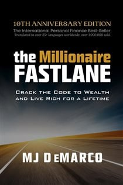

Library › Money & Finance
The Millionaire Fastlane — Summary & Key Lessons

Crack the code to wealth and live rich for a lifetime — why 'get rich slow' is a trap and the Fastlane is a math change.
📖 OPEN THE FULL INTERACTIVE BREAKDOWN →🌐 Read it in Hindi, Hinglish, Gujarati, Tamil & 22 more languages — free, with audio.
💡 The Big Idea
DeMarco — who built and sold a limo-booking web company, retiring in his 30s — divides financial life into three roadmaps. The SIDEWALK: living for today, no plan, wealth defined by stuff — destination poverty regardless of income. The SLOWLANE: the culturally approved plan (job, save 10%, index funds, retire rich at 65) — a 50-year trade of your five prime decades for freedom at the end, with a wealth equation capped by hours and raises. The FASTLANE: producer, not consumer — build a business system that separates income from time, obeying the Five Commandments (Need, Entry, Control, Scale, Time), then let explosive income plus asset value (selling the system at a multiple) compress 40 years of wealth into 5. Wealth is the formula, not the fantasy: it's a process, never an event.
🧠 The 5 Key Lessons
Lesson 1: Three Roadmaps: Sidewalk, Slowlane, Fastlane
Parts 1–3: Wealth in a Wheelchair / The Roadmaps
Your financial destination is set by the map you drive, and each map has a wealth equation. Sidewalkers (most people, at every income — including athletes and lottery winners who go broke) have none: Wealth = Income + Debt; today's gratification consumes tomorrow. Slowlaners accept the deferred-life bargain: Wealth = Job Income + Investments — but income is capped (hours are finite, raises are inches), the plan depends on variables you can't control (markets, employers, health), and its endpoint delivers freedom precisely when youth is spent. 'The Slowlane isn't wrong — it's just SLOW': 5 days of servitude buy 2 days of freedom, for 40 years, hoping compound interest matures before you do. The Fastlane changes the equation itself: Wealth = Net Profit + Asset Value — profit scales with units sold (no hourly ceiling), and the business itself becomes a sellable asset worth a multiple of earnings. Compound interest is the Slowlaner's engine; it's merely the Fastlaner's parking garage after the wealth is made.
📖 Example: DeMarco's lightning-bolt moment: a young man in a Lamborghini Countach — DeMarco, a teen, expected an athlete or heir; the driver was an ordinary-looking inventor. 'What do you do?' produced the answer that rerouted his life: he'd created something once that… Read the full example →
⚡ Do this: Identify your current map honestly: write your own wealth equation as it actually operates today (what grows your net worth, and what caps it?). If the cap is your hours, you've found the problem the rest of the book solves.
Lesson 2: The Law of Effection: Serve Millions to Make Millions
Part 4: The Law of Effection
Beneath every fortune lies one law: the more lives you affect, in scale (many people) or magnitude (deeply), the more you earn. Money is a receipt for value delivered — stop asking 'how do I make money?' and ask 'how do I serve many, or serve deeply?' This reframes everything: the employee affects a handful of colleagues (capped receipt); the surgeon affects patients profoundly but one at a time (magnitude without scale — high but bounded income); the software founder affects millions lightly (scale — unbounded). It also explains why 'do what you love' misleads: the market doesn't pay for your passion; it pays for its problems solved. Love the GAME of building value, and let passion follow competence and impact. Selfishness is the Sidewalk's disease; the Fastlane is, structurally, a service vehicle: your wealth is a mirror of the value you've externalized.
📖 Example: DeMarco's own receipts: his limo-site succeeded exactly when he stopped obsessing over his income and started obsessing over solving travelers' and operators' booking problems — traffic, then revenue, then the multi-million-dollar sale followed the served… Read the full example →
⚡ Do this: Rewrite your money goal as a service goal: 'I will help [number] people with [problem].' Then audit your current work: how many people does it affect, and how deeply? The gap between that number and your goal is your build order.
Lesson 3: The Five Fastlane Commandments: NECST
Part 5: The Commandments
Not all businesses are Fastlanes; a job you own is still a job. Test every venture against NECST. NEED: the market must want it — businesses fail chasing founder-passion into indifferent markets; solve real problems ('chase needs, not money'). ENTRY: if anyone can start it effortlessly (drop-shipping fads, MLMs), everyone will, and margins die — high barriers (skill, capital, complexity) protect; low barriers demand exceptionalism. CONTROL: never build your empire on someone else's platform — the affiliate whose program is cancelled, the seller whose algorithm shifts, all learn that 'hitchhikers' die at the driver's whim; own the brand, the product, the customer list. SCALE: the ceiling question — a local shop tops out at neighborhood reach; code, products, franchises, and audiences reach millions. TIME: the endgame — the business must eventually run detached from your hours (systems, staff, automation), or you've bought a treadmill, not a vehicle. Five gates; a true Fastlane clears all five.
📖 Example: DeMarco grades common paths brutally: the solo consultant fails Scale and Time (income married to hours); the franchise-buyer often fails Control and Entry-economics; the network marketer fails Control AND Entry (anyone joins, headquarters owns everything —… Read the full example →
⚡ Do this: Score your current venture (or best idea) 1–10 on each commandment. Any gate below 5 is your redesign assignment — fix Control and Time first; they're the ones that quietly re-enslave founders.
Lesson 4: The Three Fastlane Interstates & the Money Tree Seedlings
Part 6: Your Vehicle to Wealth
The best Fastlane vehicles cluster into 'money tree seedlings' — systems that grow toward self-sustaining income: RENTAL SYSTEMS (real estate, licensing, royalties — assets rented repeatedly), COMPUTER/SOFTWARE SYSTEMS (code that duplicates infinitely at near-zero marginal cost — 'the best money tree'), CONTENT SYSTEMS (books, audiences, media — created once, distributed forever), DISTRIBUTION SYSTEMS (franchises, e-commerce networks — pipelines moving products at scale), and HUMAN RESOURCE SYSTEMS (businesses run by hired operators). All obey the producer/consumer flip: get on the other side of every transaction you love as a consumer. Crucially, DeMarco's ownership math: wealth accelerates not through income alone but through ASSET VALUE — a business earning X sells for a multiple of X, so every profit dollar you build is simultaneously worth 3–10 dollars at exit. The Slowlaner saves earned dollars; the Fastlaner manufactures valuation.
📖 Example: The multiple effect in DeMarco's own exit: his company's profits were worth their annual figure to him as salary — but many times that figure to an acquirer, converting years of built systems into a single liquidity event that funded permanent freedom. His… Read the full example →
⚡ Do this: Choose your seedling: match your skills to one system type (content, code, rental, distribution, HR) and commit to it for 12 months. Track a new metric monthly alongside income: estimated asset value — what would this sell for? Build the number that compounds.
Lesson 5: The Process: Execution Eats Ideas, and the Sidewalk's Sirens
Part 7–8: The Roads / Your Speed
The Fastlane's unglamorous engine room: IDEAS ARE WORTHLESS, EXECUTION IS EVERYTHING — the idea is a multiplier of execution, and a mediocre idea brilliantly executed beats genius in a drawer; 'the world will always punish the talkers and reward the doers.' Someday never arrives: the road trip begins with a first step taken amid uncertainty, not a perfect map. Complaints are market research (every 'I hate how...' is a business plan); failure is the tuition (DeMarco's string of flops preceded the win); and the process demands years of unbalanced obsession the highlight reels never show — wealth is 'a process, not an event': the event (the sale, the launch, the exit) is just the process's receipt. Final guardrails: avoid the Sidewalk's sirens even after success (lifestyle inflation re-enslaves), keep the wealth trinity as the true scoreboard — family, fitness, freedom — and remember money's job: buying back your time.
📖 Example: DeMarco's pre-success résumé is the chapter's proof: failed businesses, delivery-driver stints, living with his mother in his twenties while peers 'progressed' — then five years of obsessive building that outsiders later called overnight luck. His… Read the full example →
⚡ Do this: Kill one 'someday': take the first concrete step on your Fastlane idea within 72 hours (register, call, build the landing page). Start a complaint journal — log every friction you and others voice this month; it's your idea pipeline. And define your wealth trinity numbers now, so success has a finish line that isn't a bigger cage.
✅ 5-Step Action Plan
- Write your real wealth equation; identify what caps it.
- Convert your money goal into a serve-X-people goal.
- Score your venture on NECST; redesign the failing gates.
- Pick your money-tree seedling; track asset value monthly.
- First step in 72 hours; complaint journal as idea pipeline.
💬 Best Quotes from The Millionaire Fastlane
- “Wealth is a process, not an event.”
- “If you want to make millions, serve millions.”
- “The Slowlane is a plan that says: sacrifice your today for a tomorrow that may never come.”
Interactive version: mark lessons as read, listen in your language, share quote cards.